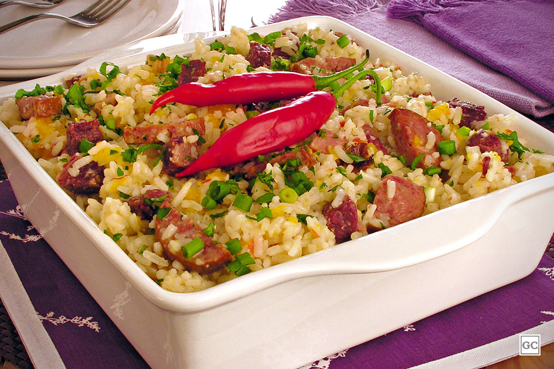

Arroz de Carreteiro

Breve História do Arroz de Carreteiro
O arroz carreteiro é um prato tradicional do Rio Grande do Sul.
Ele foi criado pelos carreteiros que precisavam preparar
refeições com ingredientes perecíveis durante longas viagens em uma panela só.
Ingredientes
3 copos de arroz
200 g de bacon fatiado
1 tomate grande bem maduro
Pimenta calabresa
Sal
500 g de carne seca
200 g de calabresa
1 cebola grande
Salsa
Modo de preparo
Cozinhe a carne seca em panela de pressão, retire, espera esfriar e desfie.
Reserve.
Retire a pele da calabresa e corte em cubos juntamente com o bacon.
Corte o tomate em cubos pequenos sem as sementes bem como a cebola.
Reserve.
Refogue o bacon e a calabresa até ficar bem dourada, acrescentando depois
a cebola, tomate, pimenta calabresa e a carne desfiada.
Após acrescente o arroz, afogue bem, adicione a água corrigindo o sal se
necessário e abaixe o fogo aguardando secar.
Quando pronto, colocar a salsa em cima.
Seu Arroz de Carreteiro está pronto.